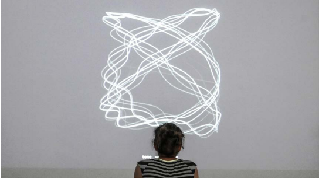
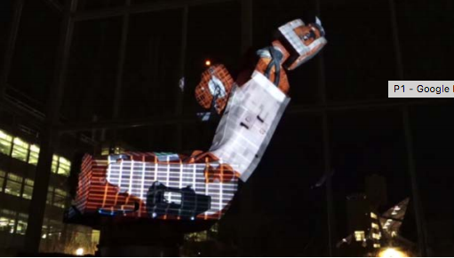
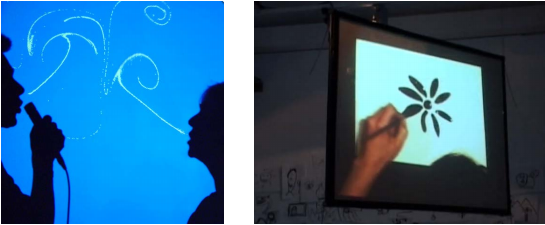

RESPUESTA DE INVESTIGACIÓN/LECTURA
Realizado por Karolyn Vintimilla
1. Luisa Pereira

1. Introducción (Biografía)
Luisa Pereira es una artista, programadora y músico actualmente
en New York. El tipo de trabajo que realiza es examinar la música
a través del diseño y codificación, tomando la forma de
herramientas interactivas , dispositivos generativos , grabados y
esculturas. Ella ha presentado sus proyectos en varias parte de
América, además han aparecido en la revista Wired , y en los
sitios web de diseño como Gizmodo. Colabora con artistas y
marcas en la creación de experiencias interactivas y desarrollo de
software y hardware de la creación de prototipos.
2.CAJA DE MÚSICA
El proyecto que más me gusto es el de la caja de música ya que
esta basada en poder escoger desde una canción acústica hasta
una electrónica. Lo interesante de este proyecto es que existe una
efectiva interactividad junto con el espectador; las herramientas
que utiliza es dentro de un cuarto totalmente oscuro, un cubo
blanco que sirve para poder cambiar de sonido y una esfera
blanca que funciona para poder cambiar el tiempo del sonido. Es
un proyecto realizado con una interfaz simple para que el usuario
se concentre más en lo auditivo que es en lo que se especializa
Luisa Pereira.
3. Comentario personal (contexto-ideas)
En mi opinión este proyecto puede ser aplicado para todo el
público, por su facilidad de poder probarlo, además de que es
muy entretenido. Algo importante que tiene es que se pueden
utilizar sus dos elementos al mismo tiempo y así crear un tipo de
sonido diferente. Lo que en mi opinión agregaría, es tener más
tipos de música para poder variarlos de manera distinta.
2.Gene Kogan

1. Introducción (Biografía)
Gene Kogan es un artista y programador el cual se dedica en
sistemas generativos y aplicaciones con las nuevas tecnologías
tanto en contextos artísticos como expresivos. La diferencia que el
muestra en sus proyectos es que el da música y arte visual, en
vivo a base de códigos. Uno de sus grandes intereses es tener la
suficiente experiencia de nuevas herramientas interactivas para
crear objetos dinámicos y fluidos, de esta manera poder construir
herramientas artísticas más accesibles para los demás
2. MACHINE YEARNING
El proyecto más interesante para mi es “Machine Yearning” el cual
es un brazo de robot industrial ABB puesto en un cubo de cristal,
además las coordenadas del robot se transmiten en tiempo real y
una versión modificada de Kinect. La proyección de los colores a
mi parecer cambian según el movimiento que tiene el robot.
3. Comentario personal (contexto-ideas)
En mi opinión este tipo de proyecto puede ser utilizado de
diferente manera como con objetos más pequeños y repetitivos
que puedan ser utilizados por todas las personas. El tipo de
contexto puede ser el mismo, ya que es una herramienta que
cuenta con movimientos simples para que sea accesible para todo
el público tanto como niños hasta adultos.
3. Zach Lieberman
School for Poetic Computation

1. Introducción (Biografía)
Zach es un artista que utiliza la tecnología para unir lo visible y lo
invisible, y su objetivo es sorprender con sus trabajos. Es uno de
los co-fundadores de openFrameworsy que se trata de una
biblioteca de codificación de mensajes publicitarios. Actualmente
está trabajando en el proyecto EyeWriter que es para ayudar a las
personas a dibujar con sus ojos. En el año 2010 su proyecto fue
publicado por la revista “Time” como uno de los 50 mejores
inventos del 2010. Es profesor en “School for Poetic
Computation”.
2.DRAWN - EYEWRITER - MESSA DI VOCE
Zach Lieberman tiene varios proyectos muy interesantes que en
mi opinión los tres mejores son EyeWriter, Messa di Voce, y
Drawn. Porque para estos tres tipos de proyectos el utiliza la idea
de que sean accesibles y entretenidos para todo el público, en
EyeWriter es un gran invento que motiva a las personas
especialmente las de baja visión; Messa di Voce es una proyecto
que a medida de que hablas se crea un arte visual y se puede
hacer galerías en vivo de esto y Drawn que se trata de dibujar y
darle vida, ya que luego puedes modificarlo como quieras.
3. Comentario personal (contexto-ideas)
En mi opinión todos estos proyectos pueden ser utilizados para la
educación de niños y adultos, quizás siendo una hora de
entretenimiento para mostrar lo que se puede hacer con la
tecnología. El proyecto Drawn es el que más me gusta en cuanto
a la carrera ya que con esto se pueden realizar animacion clásica
o stop motion de una forma más interactiva y divertida.